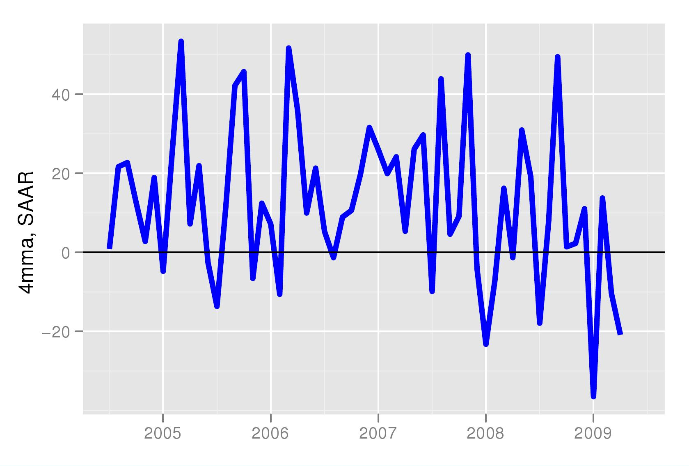
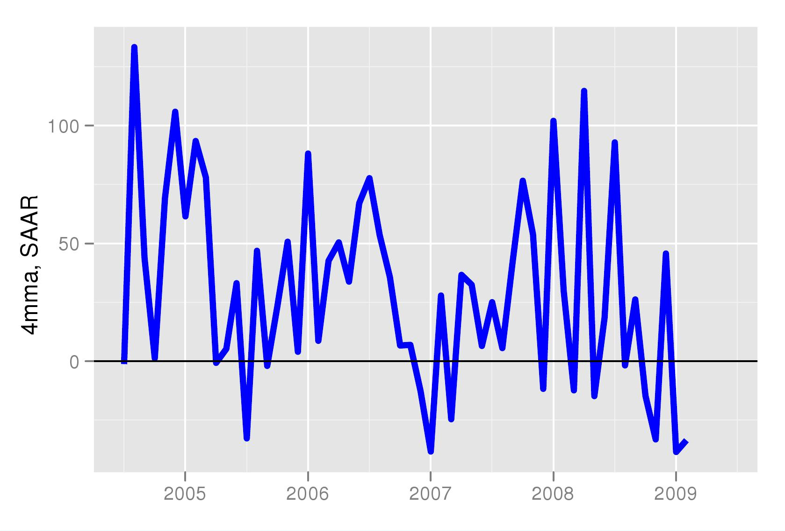
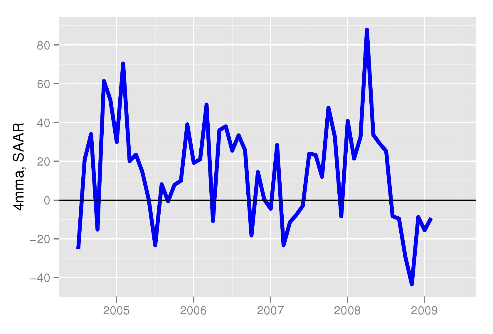
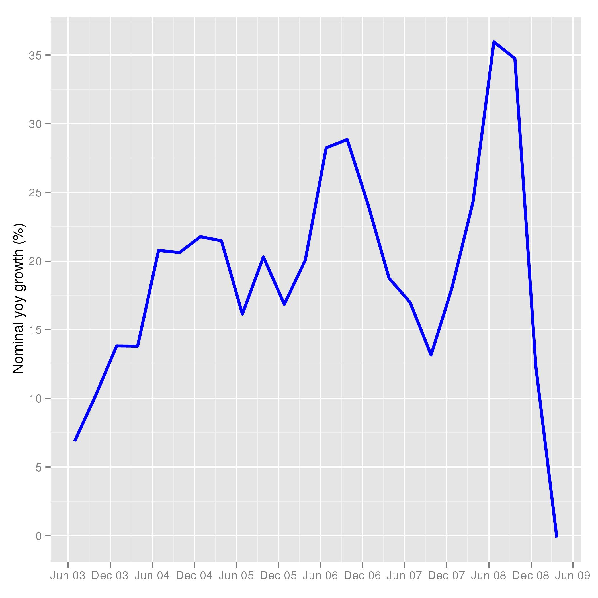

RBI has got to do it
Financial Express, 3 August 2009
The sharp fall in external demand, the decline in investment demand, and the decline in corporate sales indicates that private demand has shrunk. This decrease in demand is unlikely to be offset by the 0.8 percent increase in fiscal deficit of the central government budgeted for 2009-10.
Investment intentions
We first look at investment, the biggest driver of aggregate demand in the 2000s, when it rose from 6 percent of GDP to 16 percent of GDP. Data from various sources suggests that investment demand has shrunk in April-June 2009. The first measure of investment we look at is drawn from the CMIE Capex database. This database shows that old projects which were being implemented are broadly continuing to be implemented. We focus on new project announcements. In the quarter April-June 2009, only Rs 1.2 crore worth of new projects were announced. This was the lowest number in any quarter since 2005.
The sharp fall in investment intentions is also noted by the RBI, drawing on an unpublished business expectations survey presented in the July credit policy review. Similarly, the fall in both imports and production of capital goods suggests investment demand has dropped. Figures 1 and 2 show monthly moving averages of month on month seasonally adjusted growth in imports and production of capital goods.
Export growth
Looking at the external sector, one of the engines of growth was export growth. With exports shrinking at an average annualised rate of about 15 percent (month on month seasonally adjusted data seen in Figure 3), firms face a shrinking market. For many years, fast growing external sales has been a driver of growth for Indian companies. With a shrinking US and world economy, Indian industry, as well as Indian agriculture, has seen lower demand.
Sales
Quarterly sales data shows a very sharp decline in the latest quarter for which data is available (Jan-Mar 2009). The figure shows sales of all listed companies. The growth rate in sales is measured quarter on quarter (seasonally adjusted).
Government expenditure
While government final consumption expenditure has risen sharply in the Jan-March quarter, the increase is to a large extent due to additional expenditure on account of the sixth pay commission, including the arrears, and the farmer loan waiver. Normally it has been seen that fiscal expansion is too late to be effective in preventing a sharp downturn. In India's case it was fortunate that the pre-election expansion happened to coincide with the global business cycle downturn. This helped fiscal policy in being effective in providing a stimulus in time. 2009-10 may also see a large contribution of goverment expenditure to growth. However, beyond this fiscal year it may be difficult for government spending to keep rising at the same rate. This is likely to be primarily due to the high level of the debt GDP ratio which is going to restrain the government's borrowing programme.
In summary, there has been a shrinking of aggregate demand on account of exports and on account of private investment (this will be fully known when the data for private corporate investment becomes available next year). This means that monetary policy should now do all it can to push aggregate demand.
Back up to Ila Patnaik's media page
Back up to Ila Patnaik's home page